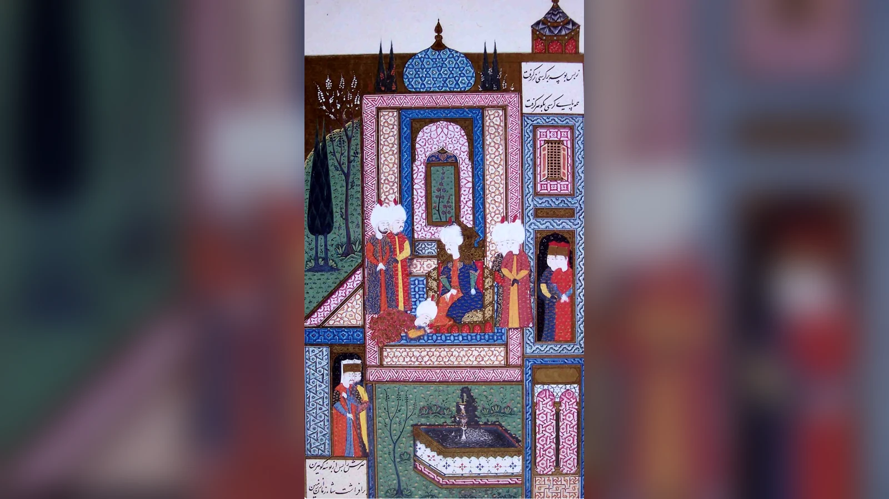
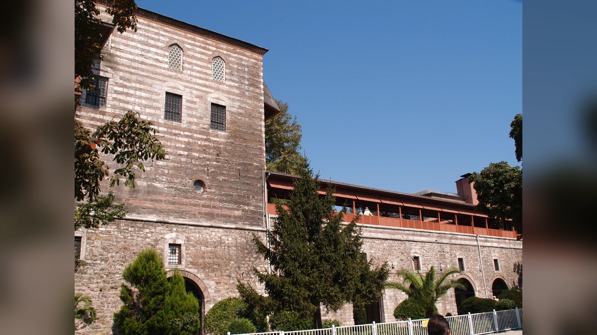
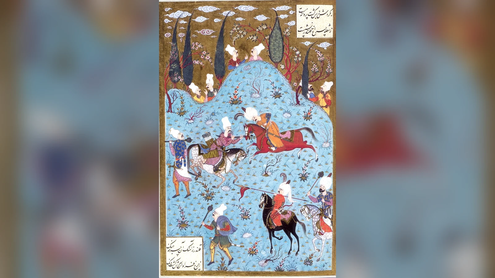
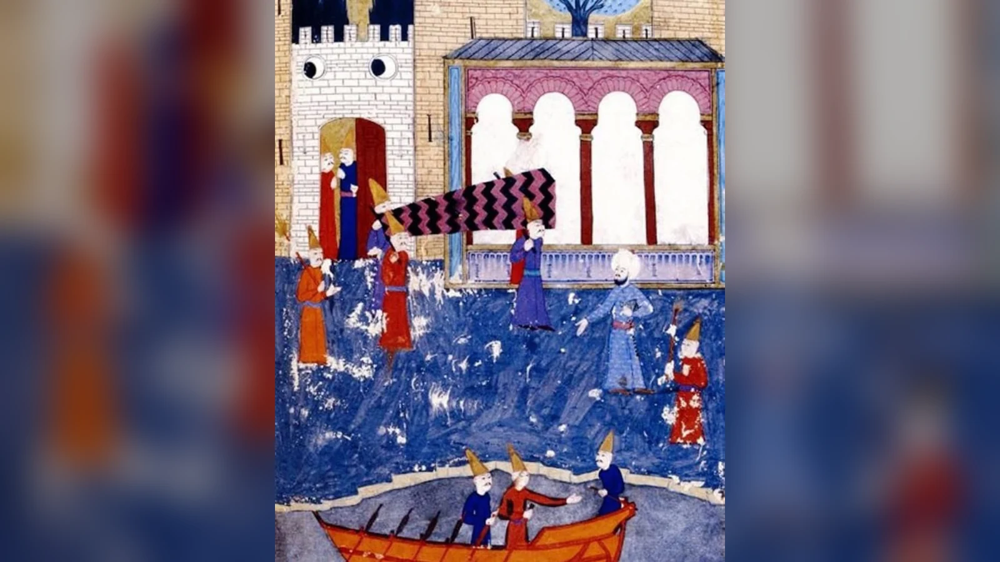

Pargalı İbrahim Paşa'nın 1536'da Kanuni Sultan Süleyman'ın emriyle öldürülmesinin tek ve tartışmasız bir nedeni bilinmiyor. Eldeki kaynaklar, onu doğrudan "ihanet ettiği için", "Hürrem Sultan istediği için" ya da yalnızca "kibirli olduğu için" idam edilmiş bir devlet adamı olarak göstermeye yetmiyor. Daha güçlü açıklama, İbrahim'in yıllar içinde olağanüstü genişleyen askerî ve siyasi yetkilerinin, saray içindeki rekabetlerin, Irakeyn Seferi sırasında belirginleşen İskender Çelebi çatışmasının ve Kanuni'nin ona duyduğu güvenin aşınmasının aynı dönemde birleşmesidir. Onu zirveye taşıyan şey padişaha olağanüstü yakınlığıydı; fakat Osmanlı yönetiminde bağımsız bir hukuki güvence yaratmayan bu yakınlık, güven kaybolduğunda onu koruyamadı.
İbrahim Paşa'nın ölümü bu nedenle yalnız bir saray entrikası değildir. Asıl dikkat çekici olan, bir kul kökenli devlet adamının hükümdarın desteğiyle imparatorluğun en güçlü isimlerinden birine dönüşebilmesi ve aynı düzen içinde bir gecede bütün siyasi korumasını kaybedebilmesidir. İbrahim'in hikâyesinde güç ile kırılganlık birbirinin karşıtı değil, aynı ilişkinin iki sonucuydu. Kanuni ona büyük yetkiler verdiği için yükseldi; fakat bu yetkilerin nihai kaynağı yine Kanuni olduğu için, padişahın güveni geri çekildiğinde makamının büyüklüğü kendisine dokunulmazlık sağlamadı.
Popüler anlatılar bu karmaşık süreci tek bir dramatik nedene indirmeyi sever. Hürrem Sultan'ın rakibini ortadan kaldırdığı, İbrahim'in kendisini padişah sanmaya başladığı, Kanuni'nin verdiği sözü bozabilmek için özel bir fetva aldığı veya son gecede iki eski dost arasında uzun bir hesaplaşma yaşandığı anlatılır. Bunların bazıları tarihsel gelenekte iz bırakmış iddialara dayanır, bazıları ise sonraki anlatılarda dramatikleşmiştir. İbrahim Paşa'nın neden öldürüldüğünü anlamak için yapılması gereken, ölümünden önceki birkaç haftaya değil, yaklaşık on üç yıllık sadrazamlığı boyunca nasıl bir güç biriktirdiğine ve bu gücün hangi koşullarda siyasi riske dönüşmüş olabileceğine bakmaktır.
Pargalı İbrahim Paşa Kimdi?
İbrahim Paşa'nın hayatının erken dönemi, kariyerinin sonraki safhalarına kıyasla daha belirsizdir. Kaynaklar onun Hristiyan kökenli olduğu konusunda genel olarak birleşir; doğum yeri için Parga öne çıkar ve bu nedenle Osmanlı tarih yazımında "Pargalı" adıyla tanınır. Bununla birlikte doğum tarihi, ailesinin kimliği ve Osmanlı hizmetine tam olarak hangi yoldan girdiği konusunda bütün kaynaklar aynı ayrıntıları vermez. Daha sonraki anlatılardaki renkli çocukluk hikâyelerini kesin biyografi gibi kullanmak bu yüzden sorunludur.
İbrahim'in Osmanlı sarayına köle statüsü içinde girdiği ve Şehzade Süleyman'ın Manisa yıllarında onun yakın çevresine katıldığı kabul edilir. Saray hizmetindeki yeteneği, eğitimi ve hükümdarla kurduğu kişisel bağ kariyerinin temelini oluşturdu. Süleyman 1520'de tahta çıktığında İbrahim de onunla birlikte İstanbul'daki merkezî iktidar çevresine taşındı. Kaynaklarda has odabaşılık gibi hükümdarın mahrem hizmet alanına yakın görevlerde bulunduğu görülür. Bu yakınlık sıradan bir bürokratik yükselişten farklıydı: İbrahim'in gücü daha başlangıçta yalnız makamdan değil, padişahın şahsına erişiminden doğuyordu.
Osmanlı sarayında "kul" kavramı modern anlamdaki tek tip kölelik kategorisiyle açıklanamaz. Padişahın kulları arasında askerî ve idarî hiyerarşinin en yüksek basamaklarına çıkabilen kişiler vardı. Bu sistem hükümdara, yerel hanedanlara veya kalıtsal aristokrasiye dayanmayan yönetici kadrolar oluşturma imkânı veriyordu. Fakat yükselmenin kaynağı padişahın iradesi olduğu için, kişinin serveti ve makamı da hükümdarın lütfuyla yakından bağlantılıydı.
İbrahim'in kariyeri bu yapının olağanüstü örneğidir. Kökeni onun sadrazam olmasını engellemedi; tersine saray içinde yetişmiş ve hükümdara şahsen bağlı bir isim olması yükselişini kolaylaştırdı. Ancak aynı yapı ona hükümdardan bağımsız bir siyasi meşruiyet sağlamadı. Bir Avrupa aristokratının kalıtsal toprağı veya bağımsız soyluluk ağı gibi padişahın kararından ayrı bir güvenceye sahip değildi. Bu nedenle İbrahim'in yükselişini anlamak, ölümündeki kırılganlığı anlamanın da başlangıcıdır.
"Pargalı" onun coğrafi kökenini anlatan bir adlandırmadır. "Makbul İbrahim Paşa" ifadesi gözde, kabul görmüş ve hükümdarın teveccühünü kazanmış devlet adamı görüntüsünü yansıtır. "Maktul İbrahim Paşa" ise öldürülmesinden sonra kullanılan ve infaz edilmiş oluşunu öne çıkaran addır. Popüler anlatıda sanki hayatının iki resmî safhası varmış ve bir gün "Makbul", ertesi gün "Maktul" ilan edilmiş gibi bir görüntü oluşabilir. Bu adları dönem içindeki tek bir resmî unvan değişikliği gibi değil, İbrahim'in tarihsel hafızadaki iki zıt konumunu ifade eden nitelemeler olarak görmek daha güvenlidir.
Sadrazamlığa Yükselişi Neden Olağanüstüydü?
İbrahim Paşa 1523'te sadrazamlığa getirildi. Bu atamanın dikkat çekici yanı yalnız genç sayılabilecek bir devlet adamının imparatorluğun en yüksek yürütme makamına çıkması değildi. İbrahim, geleneksel kariyer basamaklarının önemli bölümünü çok hızlı geçmişti. Önceki sadrazam Pîrî Mehmed Paşa gibi uzun idarî tecrübeye sahip bir ismin ardından hükümdarın yakın çevresinden gelen İbrahim'in seçilmesi, Kanuni'nin kişisel güveninin atamadaki ağırlığını açıkça gösteriyordu.
Sadrazam, padişahın mutlak anlamda "ikinci hükümdarı" değildi; fakat Divân-ı Hümâyun'un başında devletin askerî, idarî ve diplomatik işlerinde olağanüstü geniş etkiye sahipti. Padişah sefere katılmadığında orduyu yönetebilir, yabancı elçilerle müzakere edebilir ve hükümdarın verdiği yetki çerçevesinde devlet mekanizmasının büyük bölümünü koordine edebilirdi. İbrahim'in Kanuni'ye kişisel yakınlığı bu kurumsal yetkilerle birleştiğinde, Osmanlı tarihinde az sayıda sadrazamın eriştiği görünürlüğe ulaştı.
1524'te gerçekleştirilen görkemli düğün de İbrahim'in yükselişinin sembollerinden biri hâline geldi. Uzun süre onun Kanuni'nin kız kardeşi Hatice Sultan'la evlendiği yaygın kabul gördü. Ancak modern araştırmalarda bu kimlik ciddi biçimde tartışılmıştır. Eşiyle ilgili belgeler, Muhsine Hatun adı ve aile bağlantıları üzerinden farklı bir tablo ortaya koymuştur. Bu nedenle "İbrahim Paşa, Hatice Sultan'la evlenerek hanedanın damadı oldu" cümlesini tartışmasız gerçek gibi kullanmak doğru değildir.
Evlilik tartışması yalnız biyografik ayrıntı değildir. Hatice Sultan anlatısı doğru kabul edildiğinde İbrahim'in gücü hanedanla evlilik üzerinden açıklanmaya daha elverişli hâle gelir. Oysa eşinin hanedan mensubu olmadığı kabul edilirse, kariyerinin asıl dayanağı daha da belirgin biçimde padişahın kişisel güveni ve kendisine verilen görevler olur. Bu, İbrahim'in yükselişini açıklarken romantik saray ilişkilerinden çok hükümdar-kul ilişkisinin siyasi yapısına bakmayı gerektirir.
İbrahim'in İstanbul'daki büyük sarayı da statüsünün fiziksel göstergesiydi. Atmeydanı'nda, imparatorluk törenlerinin merkezindeki yapıyla ilişkilendirilen İbrahim Paşa Sarayı onun siyasi görünürlüğünü artırıyordu. Bugün Türk ve İslam Eserleri Müzesi olarak kullanılan yapının tarihsel katmanları ve İbrahim'le ilişkisinin ayrıntıları mimarlık tarihinin ayrıca tartıştığı konulardır; fakat on altıncı yüzyıl anlatılarında sadrazamın Atmeydanı çevresindeki görkemli ikametgâhı, servet ve temsil gücünün açık işaretiydi.

Burada İbrahim'in yükselişini yalnız "Kanuni arkadaşını çok seviyordu" diye açıklamak yetersiz kalır. Kişisel yakınlık kapıyı açmış olabilir, ancak sadrazamlığı on iki yılı aşkın süre sürdüren şey yalnız dostluk değildi. İbrahim askerî seferlerde, diplomatik görüşmelerde ve imparatorluğun yönetiminde önemli görevler üstlendi. Hükümdarın güvenini sürekli yeniden üreten şey, yakınlık ile işlevselliğin birleşmesiydi.
İbrahim Paşa'nın Gücü Nasıl Büyüdü?
İbrahim'in sadrazamlığı Osmanlı İmparatorluğu'nun askerî genişlemesinin en hareketli dönemlerinden birine denk geldi. 1520'lerde Belgrad'ın ve Rodos'un alınmasının ardından Osmanlıların Orta Avrupa'ya yönelişi hızlandı. İbrahim, 1526 Mohaç Seferi'nde ve sonraki Macaristan siyasetinde önemli rol oynadı. 1529 Viyana Seferi ve 1532 Alman Seferi gibi büyük askerî girişimler onun sadrazamlığında gerçekleşti.
Mohaç sonrasında Macaristan tahtı üzerindeki mücadele Osmanlı-Habsburg rekabetini yeni aşamaya taşıdı. İbrahim yalnız savaş alanındaki komutan olarak değil, diplomatik düzenin kurulmasında da etkiliydi. János Szapolyai'nin Osmanlı desteğiyle Macar kralı olarak konumlandırılması, Ferdinand ve Habsburglarla yapılan görüşmeler, İstanbul'a gelen elçilik heyetleri sadrazamın uluslararası görünürlüğünü artırdı.
Avusturya elçileriyle yürütülen müzakerelerde İbrahim'in kullandığı siyasi dil özellikle dikkat çekmiştir. Elçi raporları onun kendisini Osmanlı devlet mekanizmasının merkezinde gösteren ifadeler kullandığını aktarır. Ancak diplomatik görüşmelerde kullanılan gösterişli sözleri doğrudan "İbrahim kendisini padişahla eşit görüyordu" sonucuna dönüştürmek sakıncalıdır. Erken modern diplomasi, temsil ve üstünlük iddiasının abartılı dille ifade edildiği bir alandı. Sadrazamın yabancı elçiye gücünü göstermek istemesi ile Osmanlı tahtına göz dikmesi aynı şey değildir.
İbrahim'in dış politikadaki rolü Habsburglarla sınırlı değildi. Fransa ile Osmanlı ilişkilerinin gelişmesinde de sadrazamlık makamı önemli aracıydı. François I ile Şarlken arasındaki rekabet, Fransa'yı Osmanlılarla diplomatik yakınlaşmaya itti. Daha sonra 1536 kapitülasyonları olarak ünlenen düzenlemeler konusunda tarih yazımında belge ve tarihlendirme tartışmaları vardır; bu nedenle İbrahim'in tek başına modern anlamda sabit bir "Fransız ittifakı anlaşması" kurduğu şeklindeki basit anlatıdan kaçınmak gerekir. Yine de Fransız diplomasisiyle kurulan temaslarda İbrahim'in önemli aktör olduğu açıktır.
Bu uluslararası rol onun gücünü iki yönden büyüttü. Birincisi, yabancı devletler Osmanlı sarayına erişmek için sadrazamı temel muhataplardan biri olarak görmeye başladı. İkincisi, İbrahim'in kendi hane halkı, görevlileri ve patronaj ağı genişledi. Erken modern bir devlet adamının gücü yalnız resmî unvanlarından değil, iş ve makam dağıtabilme kapasitesinden de doğuyordu. Sadrazamın çevresinde yükselen insanlar, onun devlet içindeki ağırlığını artırıyordu.
Fakat geniş patronaj ağı bağımsız bir "İbrahim devleti" anlamına gelmez. Bu ağın işlemesi padişahın İbrahim'i makamında tutmasına bağlıydı. Osmanlı merkezî yönetiminde sadrazamın gücü büyük olabilirdi, fakat bu güç hanedanın egemenliğinden türetiliyordu. İbrahim'in siyasi kırılganlığını yaratan paradoks tam olarak buydu: Yetkileri genişledikçe devletin çok daha fazla alanında görünür hâle geliyor, görünürlüğü arttıkça başarısızlıkların ve rakiplerinin eleştirilerinin de merkezi hâline geliyordu.
Başarı ile riskin birlikte büyümesi, İbrahim'in son yıllarını açıklamak için "kibir" gibi karakter özelliklerinden daha işlevsel bir çerçeve sunar. Güçlü sadrazam çok sayıda karara dokunur; çok sayıda karar ise daha fazla çıkar grubunu etkiler. Bir görevlendirme birini yükseltirken başkasını dışarıda bırakır, bir mali karar başka bir bürokratın alanına girer, bir askerî tercih başarısız olduğunda sorumluluk daha görünür olur. İbrahim'in gücü yalnız düşmanlarının kıskançlığını artırmış olabilecek kişisel ihtişam değil, devlet içindeki ilişkilerin giderek daha büyük bölümünü kendisine bağlayan kurumsal konumdu.
Mısır ve Anadolu’daki Görevleri Gücünü Nasıl Pekiştirdi?
İbrahim Paşa’nın yükselişini yalnız Kanuni’yle dostluğu üzerinden okursak, padişahın ona neden giderek daha geniş görevler verdiğini açıklayamayız. Mısır’daki düzenlemeleri bu konuda önemli bir örnektir. Sadrazamlığı beklerken Mısır’a gönderilen Ahmed Paşa’nın 1524’teki isyanının ardından, bölgenin idari ve mali düzenini yeniden kurma görevi İbrahim’e verildi. 1524–1525’teki bu görev, başkentte hükümdarın yakınında bulunmaktan farklı bir sorumluluk taşıyordu: Yeni fethedilmiş, güçlü yerel gelenekleri olan bir eyalette Osmanlı yönetimini işler hâle getirmek.
Kahire’de yapılan düzenlemelerde eski kayıtların ve yürürlükteki uygulamaların incelenmesi önem taşıdı. Hazırlanan Mısır kanunnamesi, vergiler, görevlilerin sorumlulukları ve eyalet yönetiminin işleyişi gibi meseleleri düzenliyordu. Böyle bir çalışma, sadrazamın yetkisinin yalnız orduya emir vermekten ibaret olmadığını gösterir. Yerel gelir düzenini anlamak, farklı grupların hak ve yükümlülüklerini belirlemek ve merkez adına uygulanabilir kurallar oluşturmak da onun görev alanındaydı. İbrahim’in kariyerindeki idari başarı, askerî ve diplomatik görünürlüğünün yanında hesaba katılmalıdır.
1527’de Anadolu’daki Kalender Çelebi ayaklanmasına karşı görevlendirilmesi de aynı geniş sorumluluğun başka bir yüzünü gösterir. Bölgedeki Osmanlı kuvvetlerinin uğradığı yenilgiler üzerine İbrahim Paşa harekete geçti. Ancak isyanı bastırırken yalnız askerî kuvvet kullanmadı. Ellerinden alınan tımarlar nedeniyle hoşnutsuz olan Dulkadırlı sipahilere eski haklarının geri verileceğini bildirerek isyancıların çevresindeki desteği azaltmaya çalıştı. Haziran 1527’de Kalender’in yenilmesi, askerî müdahaleyle çıkar ilişkilerini yeniden düzenleyen siyasetin birlikte yürütüldüğü bir örnekti.

Burada sadrazamın başarısını açıklayan şey yalnız hükümdara yakınlığı değildir. Hangi grubun neden merkezî yönetime karşı çıktığını değerlendirebilmesi, vaat ve görevlendirmelerle bu ittifakı çözebilmesi de önemlidir. Bu faaliyetler ona yeni itibar ve yetki kazandırıyordu. Fakat aynı zamanda daha fazla insanın gelirine, konumuna ve geleceğine müdahale ediyordu. İbrahim’in büyüyen gücünün neden hem başarı hem siyasi gerilim üretebildiğini görmek için bu somut görevler, soyut bir “çok güçlendi” cümlesinden daha açıklayıcıdır.
"Serasker Sultan" Meselesi Ne Anlama Geliyordu?
İbrahim Paşa'nın sonunu açıklamak için en sık kullanılan unsurlardan biri "serasker sultan" unvanıdır. Serasker, geniş anlamıyla ordunun başkomutanlığıyla ilişkili bir görev ve yetki alanını ifade ediyordu. İbrahim özellikle doğu seferleri bağlamında olağanüstü askerî yetkiler elde etti. Kaynak ve belgelerde onun için kullanılan unvanların biçimi, hangi tarihte ve hangi bağlamda kullanıldığı tarihçiler tarafından tartışılmıştır.
Popüler anlatı, İbrahim'in "sultan" kelimesini kullanarak kendisini Kanuni'ye eşit ilan ettiği ve ölüm fermanını böyle hazırladığı yönündedir. Bu yorum fazla doğrusaldır. Osmanlı ve İslam dünyasında "sultan" kelimesinin kullanım alanı yalnız tahta oturan hükümdarla sınırlı değildi; unvanların bağlamı, diplomatik yazışmalardaki formüller ve görevlendirmelerin niteliği birlikte incelenmelidir. Bir belgede gösterişli unvan kullanılması doğrudan taht iddiasının kanıtı değildir.
Bununla birlikte unvan tartışmasını tamamen önemsiz görmek de doğru olmaz. İbrahim'e verilen askerî yetkilerin ve törensel görünürlüğün büyüklüğü, onun sıradan sadrazamdan çok daha geniş bir temsil kapasitesine sahip olduğunu gösteriyordu. Padişah adına ordu sevk etmek, yüksek görevliler üzerinde tasarrufta bulunmak ve yabancı elçiler karşısında imparatorluğun gücünü temsil etmek, sadrazamın kişisel siyasi ağırlığını artırıyordu.
Burada iki ayrı soruyu birbirinden ayırmak gerekir. Birincisi, İbrahim gerçekten Kanuni'nin tahtını ele geçirmek için plan yaptı mı? Bunu kanıtlayan güvenilir ve açık delil yoktur. İkincisi, onun olağanüstü yetkileri ve kendisini sunma biçimi saray çevresinde rahatsızlık yaratmış olabilir mi? Bu daha makul bir ihtimaldir, ancak yine de tek başına infaz emrini açıklayan belgeye sahip değiliz.
İbrahim'in konumunun tehlikesi, mutlaka hükümdar olmak istemesinde değildi. Bir sadrazamın tahtı istemeden de hükümdarın gözünde fazla güçlü, fazla bağımsız veya denetlenmesi zor görünmesi mümkündür. Erken modern monarşilerde hükümdarın en yakınındaki güçlü favorilerin sık sık sert düşüşler yaşaması yalnız Osmanlılara özgü değildir. Saraya yakınlık iktidar üretirken aynı zamanda hükümdarın kuşkusuna en doğrudan maruz kalınan alanı yaratır.
Dolayısıyla "serasker sultan" tartışması bir suç itirafı gibi değil, İbrahim'in ulaştığı olağanüstü siyasi ölçeğin göstergelerinden biri olarak ele alınmalıdır. İnfazı açıklayan şey kelimenin kendisinden çok, bu unvanların temsil ettiği güç yoğunlaşmasının Kanuni tarafından artık nasıl algılandığıdır.
İbrahim Paşa'nın Serveti ve Gösterişi Neden Siyasi Anlam Taşıyordu?
İbrahim Paşa'nın zenginliği, sarayı, maiyeti ve törenlerdeki görünürlüğü çağdaş gözlemcilerin dikkatini çekti. Büyük bir sadrazamın yüksek gelir ve kalabalık hane halkına sahip olması olağandışı değildi; makamın kendisi temsil harcamaları gerektiriyordu. Fakat İbrahim'in uzun sadrazamlığı boyunca biriktirdiği servet ve patronaj ağı onun kişisel ihtişamını devlet içindeki siyasi konumunun sembolüne dönüştürdü.
Erken modern saray kültüründe ihtişam yalnız özel tüketim değildi. Bir devlet adamının kaç hizmetkâr beslediği, nasıl bir konakta yaşadığı, hangi hediyeleri dağıttığı ve törenlerde nerede durduğu siyasi hiyerarşinin görünür dilini oluşturuyordu. Bu nedenle İbrahim'in gösterişli yaşamı hakkında anlatılanları modern anlamda "lüks merakı"na indirgemek yanıltıcıdır. Temsil, makamın parçasıydı.
Sorun, temsilin hükümdarın ihtişamıyla rekabet ediyor gibi algılanıp algılanmadığıdır. Bazı çağdaş ve sonraki anlatılar İbrahim'in büyüklüğünü aşırı gurur ve kendini beğenmişlikle ilişkilendirir. Ancak bunların önemli bölümü onun düşüşünü bilen yazarların geriye dönük açıklamalarıdır. Bir insan idam edildikten sonra önceki davranışlarında felaketin işaretlerini aramak tarih yazımında yaygın eğilimdir.
İbrahim'in servetinin ölümünden sonra müsadere edilmesi de kul sisteminin maddi kırılganlığını gösterir. Müsadere, devletin belirli görevlilerin mallarına el koyabilmesini sağlayan uygulamalar bütününün parçasıydı ve yalnız İbrahim'e özgü değildi. İnfaz edilen yüksek görevlinin serveti üzerinde hükümdarın tasarrufu, makamla biriken zenginliğin özel mülkiyet ile devlet hizmeti arasındaki sınırlarının modern dönemdeki kadar kesin olmadığını hatırlatır.
Bu nedenle servet meselesi "çok zengin oldu, Kanuni kıskandı" gibi psikolojik açıklamayla değil, iktidarın görünürlüğü üzerinden okunmalıdır. İbrahim'in sarayı ve maiyeti, padişahın verdiği yetkinin ne kadar büyüdüğünü herkesin görebildiği işaretlerdi. Güven devam ettiği sürece bunlar hükümdarın kudretini temsil eden araçlar olabilirdi; güven zayıfladığında aynı işaretler sadrazamın aşırı büyümüş gücünün kanıtı gibi okunabilirdi.
İbrahim Paşa Kiminle Evlendi?
İbrahim Paşa'nın özel hayatıyla ilgili en kalıcı anlatı, onun Kanuni Sultan Süleyman'ın kız kardeşi Hatice Sultan'la evlendiğidir. Bu kabul uzun süre hem popüler tarih kitaplarında hem kurgu eserlerinde tekrarlandı. 1524'te düzenlenen büyük düğünün ihtişamı ve padişahın törenlere ilgisi de bu yorumu güçlendirdi.
Ancak modern araştırmalar evliliğin kimliği konusunda ciddi itirazlar ortaya koymuştur. Ebru Turan'ın İbrahim Paşa üzerine çalışmaları, arşiv ve mektup malzemesinden hareketle eşinin Hatice Sultan değil Muhsine Hatun olduğunu savunan güçlü kanıtlar sunmuştur. Muhsine Hatun'un İskender Paşa ailesiyle bağlantılı olduğu ve İbrahim'le yazışmalarının bulunduğu belirtilir. Bu nedenle günümüzde Hatice Sultan evliliğini hiçbir tartışma yokmuş gibi aktarmak güvenli değildir.
Tartışmanın varlığı, 1524 düğününün önemsiz olduğu anlamına gelmez. Padişahın sadrazamı için düzenlenen olağanüstü tören İbrahim'in saraydaki konumunu gösteriyordu. Fakat düğünün siyasi anlamını açıklamak için onu mutlaka hanedan damatlığına bağlamak gerekmez. Kanuni'nin yakın adamına gösterdiği yüksek itibar zaten başlı başına güçlü mesajdı.
Hatice Sultan anlatısının popüler kültürde bu kadar dayanıklı olması anlaşılırdır. Hanedanın kız kardeşiyle evlenen sadrazam fikri, Kanuni-İbrahim ilişkisini aile bağına dönüştürür ve Hürrem-İbrahim rekabeti üzerine kurulacak dramatik hikâyeler için uygun zemin yaratır. Fakat tarihsel anlatının görevi dramatik olarak en kullanışlı versiyonu seçmek değil, kanıtın izin verdiği sınırı korumaktır.
Evlilik tartışması aynı zamanda İbrahim'in ölümünü açıklarken ne kadar dikkatli olunması gerektiğini gösteren iyi bir örnektir. Bir ayrıntı yüzyıllarca tekrarlandığında "herkesin bildiği gerçek" hâline gelebilir; fakat yeni belge okumaları bu kabulü değiştirebilir. İbrahim Paşa'nın infazı konusunda da benzer biçimde çok tekrarlanan hikâyeleri kaynaklarının niteliğine göre ayırmak gerekir.
Hürrem Sultan İbrahim Paşa'nın Ölümünde Rol Oynadı mı?
İbrahim Paşa'nın ölümünü Hürrem Sultan'a bağlayan anlatı, Osmanlı tarihinin en popüler saray entrikalarından biridir. Hikâyenin temel mantığı açıktır: İbrahim, Kanuni'nin büyük oğlu Şehzade Mustafa'ya yakın görülüyordu; Hürrem ise kendi oğullarından birinin gelecekte tahta çıkmasını istiyordu. Dolayısıyla Mustafa'nın güçlü destekçisi olduğu düşünülen sadrazamın ortadan kaldırılması Hürrem'in çıkarına uygundu.
Bu siyasi çıkar ilişkisi tamamen anlamsız değildir. Hürrem'in saray içindeki etkisi zamanla büyüdü ve oğullarının hanedan geleceği onun için önemliydi. İbrahim'in Mustafa'yla ilişkisi de dönemin güç dengelerinde hesaba katılabilir. Ancak "çıkarı vardı" ile "infazı planladığını kanıtlayan belge vardır" aynı cümle değildir. İbrahim'in ölüm emrini Hürrem'in hazırladığı veya Kanuni'yi belirli bir komployla buna zorladığı yönünde doğrudan ve tartışmasız kanıt bulunmaz.
Hürrem'in siyasi etkisini küçümsemek de, bütün kritik infazları ona bağlamak da aynı ölçüde basitleştiricidir. On altıncı yüzyıl Osmanlı sarayında hanedan kadınları, sadrazamlar, şehzadeler, askerî görevliler ve bürokratlar arasında çıkar ilişkileri bulunuyordu. Fakat her olayın tek bir gizli yöneticisi olduğunu varsaymak, hükümdarın karar verme gücünü ve devlet içindeki diğer çatışmaları görünmez kılar.
İbrahim'in 1536'daki ölümü ile Şehzade Mustafa'nın 1553'teki infazı arasında on yedi yıl vardır. Sonraki sonucu bildiğimiz için iki olayı tek ve kesintisiz planın aşamaları gibi okumak caziptir. Ancak aradaki yıllarda hanedan dengeleri, şehzadelerin yaşları ve görevleri, Hürrem'in konumu ve devletin dış siyaseti değişmiştir. İbrahim'in ölümünü Mustafa'nın gelecekteki infazının ilk adımı olarak kesinleştirmek, kronolojiyi geriye doğru tek komploya dönüştürür.
Bu nedenle Hürrem faktörü İbrahim'in ölümünü anlamada olası saray rekabetlerinden biri olarak ele alınabilir, fakat tek veya kanıtlanmış neden olarak sunulmamalıdır. İbrahim'in kendi görev alanındaki çatışmalar, Irakeyn Seferi'ndeki gelişmeler, yetki kullanımı ve Kanuni'yle ilişkisi hakkında daha doğrudan tarihsel malzeme vardır. Ölümün açıklaması önce bunların üzerinde kurulmalıdır.
Irakeyn Seferi ve İskender Çelebi Çatışması Neden Önemliydi?
İbrahim Paşa'nın son yıllarındaki en önemli gelişmelerden biri 1533–1535 Irakeyn Seferi'dir. Osmanlı-Safevî rekabetinin merkezindeki bu büyük harekât, Azerbaycan ve Irak yönünde ilerledi. İbrahim seferin ilk safhasında geniş askerî yetkilerle doğuya gönderildi; Kanuni daha sonra orduya katıldı. Tebriz'e girildi, ardından Bağdat Osmanlı hâkimiyetine geçti.
Sefer askerî bakımdan önemli kazanımlar sağladı, fakat lojistik ve komuta sorunları da yaşandı. Doğu Anadolu ve İran coğrafyasının zorlu şartları, Safevîlerin doğrudan büyük meydan savaşından kaçınan stratejisi ve ordunun iaşe ihtiyacı Osmanlı kuvvetlerini zorladı. Bu ortamda İbrahim Paşa ile defterdar İskender Çelebi arasındaki gerilim keskinleşti.
Defterdar, devletin mali işlerinde son derece önemli görevliydi ve büyük seferlerin finansmanı ile iaşesinde kritik rol oynuyordu. İskender Çelebi'nin geniş hane halkı ve nüfuzu da dikkat çekiyordu. İbrahim ile arasındaki çatışmanın kişisel rekabet, sefer kararları, mali meseleler ve yetki paylaşımı gibi birden fazla boyutu olduğu anlaşılır. Kaynaklar olayları aynı biçimde anlatmaz.
İskender Çelebi 1535'te Bağdat'ta idam edildi. Bazı anlatılar İbrahim'in onu Kanuni'nin gözünde suçlu göstererek infazında belirleyici rol oynadığını aktarır. Daha sonra İbrahim'in de öldürülmesi, tarihçileri ve kronik yazarlarını iki infaz arasında bağlantı kurmaya yöneltmiştir. İskender'in ölümünün haksızlığına dair padişahın sonradan kanaat değiştirdiği, hatta rüya ve vicdan anlatılarıyla İbrahim'e karşı döndüğü rivayetleri ortaya çıkmıştır.
Bu noktada kanıt düzeylerini ayırmak gerekir. İbrahim ile İskender arasında ciddi çatışma yaşandığı ve İskender'in sefer sırasında idam edildiği tarihsel çerçevenin parçasıdır. İskender'in ölümünün Kanuni'nin İbrahim'e güvenini zedelemiş olması mümkündür ve birçok değerlendirmede önemli yer tutar. Ancak "Kanuni gerçeği öğrendi ve İskender'in intikamını almak için İbrahim'i öldürdü" biçiminde tek nedenli zincir kurmak, kaynakların izin verdiğinden daha kesin konuşmak olur.
İbrahim'in doğu seferindeki yetkileri de burada önem kazanır. Sadrazam, serasker olarak yalnız askerî komuta değil, geniş idarî tasarruf alanına sahipti. Bu kadar büyük yetki, başarılı olduğunda hükümdarın kudretini sahada temsil ediyordu; tartışmalı kararlar ortaya çıktığında ise sorumluluğu doğrudan İbrahim'e taşıyordu. İskender Çelebi meselesi, sadrazamın gücünün artık yalnız başarı üretmediği, ciddi düşmanlık ve hesap verme riski de ürettiği noktayı görünür kılar.
İbrahim’in ölümüne giden süreçte bu çatışma, geniş yetkilerin yarattığı riskleri somutlaştırır. Mesele bir defterdarın intikamı kadar basit değildir. Daha geniş anlamda, padişahın vekili gibi hareket eden sadrazamın kullandığı geniş yetkilerin sonuçlarının hükümdarın önüne gelmesidir. İbrahim'in gücü onu kararların merkezine yerleştirmişti; dolayısıyla yanlış veya tartışmalı bulunan kararların da merkezindeydi.
Kanuni'nin İbrahim Paşa'ya Güveni Neden Değişmiş Olabilir?
İbrahim Paşa'nın idamına ilişkin elimizde "şu suç nedeniyle öldürülmesine karar verildi" diyen ve bütün tartışmayı kapatan ayrıntılı bir gerekçe metni yoktur. Bu nedenle tarihçiler farklı kanıtları bir araya getirerek güven kaybının nedenlerini değerlendirmek zorundadır. En sağlam yaklaşım, tek bir olayın bütün süreci açıklamasını beklemek yerine 1530'ların ortasında biriken gerilimlere bakmaktır.
İlk unsur İbrahim'in olağanüstü güç yoğunlaşmasıdır. On iki yılı aşan sadrazamlık, askerî komuta, diplomasi, patronaj ve servet onu imparatorluğun hükümdardan sonraki en görünür siyasi figürlerinden biri hâline getirmişti. Bu durum tek başına suç değildi; çünkü yetkileri veren Kanuni'ydi. Fakat hükümdar açısından sadrazamın kullanışlılığı ile bağımsız güç görüntüsü arasındaki denge değişebilirdi.
İkinci unsur Irakeyn Seferi ve İskender Çelebi meselesidir. İbrahim'in doğudaki geniş yetkileri, sefer sırasında yaşanan sorunlar ve İskender'in idamı onun kararlarının daha fazla sorgulanmasına yol açmış olabilir. Kanuni'nin bu olayların bütün ayrıntılarını nasıl değerlendirdiğini kesin olarak bilmiyoruz; ancak İbrahim'in infazının sefer dönüşünden kısa süre sonra gerçekleşmesi kronolojik olarak dikkat çekicidir.
Üçüncü unsur saray ve hanedan siyasetidir. İbrahim'in Şehzade Mustafa'ya yakınlığı ve Hürrem'in oğullarının geleceğiyle ilgili çıkarları, sadrazamın konumunu saray rekabetinin parçası hâline getirmiş olabilir. Bununla birlikte 1536'da Mustafa henüz daha sonraki yıllardaki veraset krizinin aynı aşamasında değildi. Dolayısıyla bu faktörü sonraki olayların bilgisiyle olduğundan daha kesin hâle getirmemek gerekir.
Dördüncü unsur İbrahim'in temsil dili ve davranışları hakkında oluşan algıdır. Yabancı elçi raporları ve kronikler onun büyüklüğünü, kendine güvenini ve zaman zaman gösterişli ifadelerini kaydeder. Bu malzeme İbrahim'in sarayda nasıl algılanmış olabileceğine dair ipucu sağlar, fakat her sözün Kanuni tarafından "ihanet" olarak değerlendirildiğini kanıtlamaz.
Bütün bunların birleştiği yerde daha güçlü bir açıklama ortaya çıkar. Kanuni, yıllarca olağanüstü yetkiler verdiği sadrazamının artık aynı ölçüde güvenilir veya yönetilebilir olmadığı sonucuna ulaşmış olabilir. Buradaki "olabilir" boş bir belirsizlik değildir; doğrudan infaz gerekçesi belgesi bulunmadığı için kanıtın sınırını gösterir. Güven kaybının kendisi infaz kararından anlaşılabilir, fakat güveni tam olarak hangi olayın kırdığı konusunda aynı kesinliğe sahip değiliz.
İbrahim Paşa Hakkındaki Kaynaklar Neden Farklı Konuşuyor?
İbrahim Paşa’nın ölümünden sonra yazılan metinler yalnız olanları kaydetmez; böylesine güçlü bir sadrazamın neden ortadan kaldırıldığını da açıklamaya çalışır. Celâlzâde Mustafa Çelebi’nin anlatısı bunun önemli örneklerinden biridir. İbrahim’in çevresinde görev yapmış olan Celâlzâde, paşanın önceki hizmetleriyle son dönemindeki davranışları arasında belirgin bir karşıtlık kurar. Bağdat’ın fethinden sonra gurura kapıldığı ve uygun görülmeyen işler yaptığı yönündeki değerlendirmesi, döneme yakın bir tanıklık olarak dikkate alınmalıdır. Ancak bu anlatı, infaz kararının ayrıntılı ve tarafsız gerekçe tutanağı yerine konulamaz.
Bir kaynağın hükümdarın çevresinden gelmesi onu bütünüyle değersiz yapmaz. Bununla birlikte yazarın görev yaptığı kurum, korumaya çalıştığı itibar ve olayın sonucunu biliyor olması, hangi davranışları öne çıkardığını etkileyebilir. Aynı durum yabancı elçi raporları için de geçerlidir. Elçiler sadrazamın söylediklerini, görüşmelerdeki tavrını ve saraydan duyduklarını aktarır; fakat Kanuni’nin kararına giden bütün görüşmelere erişimleri yoktur. Bir diplomatın güçlü gözlemiyle hükümdarın iç dünyasına ilişkin tahmini aynı kanıt düzeyinde değildir.
Bu yüzden İbrahim’i önce kusursuz devlet adamı, sonra bir anda değişen kötü karakter olarak anlatmak kolay ama dar bir yoldur. Daha yararlı olan, yazarların hangi bilgiyi nereden edindiğini ve hangi sonucu açıklamak istediğini sormaktır. Birden fazla anlatıda gücünün büyüklüğü ve hükümdara yakınlığı öne çıkıyorsa, bunlar siyasi konumunun önemini gösterir. Yine de aynı özelliklerin tekrar edilmesi, infazın tek ve kesin nedenini bildiğimiz anlamına gelmez.
Kanuni İbrahim Paşa'yı Öldürmeyeceğine Söz Vermiş miydi?
İbrahim Paşa'nın ölümüyle ilgili en dramatik anlatılardan biri, Kanuni'nin daha önce ona hayatı boyunca zarar vermeyeceğine yemin ettiği, fakat öldürmeye karar verdiğinde bu yemini bozmanın dinî yolunu aradığı hikâyesidir. Bazı Avrupa kaynaklarında ve sonraki eserlerde bu anlatının çeşitli biçimleri görülür. Popüler tarih ise bunu çoğu zaman kesin olay gibi tekrarlar.
Sorun, hikâyenin ayrıntılarının güvenilir Osmanlı belgeleriyle açık biçimde doğrulanamamasıdır. Kanuni'nin İbrahim'e belirli süre dokunmama yemini ettiği, bir din âliminden bu yemini aşacak özel fetva aldığı ve infazı buna göre planladığı şeklindeki zinciri tartışmasız tarihsel bilgi olarak sunmak mümkün değildir.
Böyle bir anlatının neden ortaya çıktığını anlamak daha verimlidir. İbrahim ile Kanuni arasındaki olağanüstü yakınlık çağdaşların da dikkatini çekmişti. Yıllarca hükümdarın en güvendiği adamı olan sadrazamın bir gecede öldürülmesi, gözlemciler için açıklanması gereken sert dönüşümdü. "Padişah söz vermişti ama hukuki yol bularak sözünü aştı" hikâyesi, bu şaşırtıcı dönüşümü dramatik ve ahlaki çerçeveye yerleştiriyordu.
Bu tür anlatılar tamamen değersiz değildir; dönemin insanların olayı nasıl anlamlandırdığını gösterir. Ancak zihniyet tarihi için değerli bir rivayet ile olayın gerçekten böyle gerçekleştiğini kanıtlayan belge aynı şey değildir. İbrahim'in ölümünü anlatırken bu ayrımı korumak, tarihsel şüpheciliği gereksiz belirsizliğe dönüştürmeden kullanmanın örneğidir.
İnfaz Gecesi Hakkında Gerçekte Ne Biliyoruz?
İbrahim Paşa, 14 Mart’ı 15 Mart 1536’ya bağlayan gece Topkapı Sarayı’nda öldürüldü. Feridun Emecen’in TDV İslâm Ansiklopedisi’ndeki tarihlendirmesi, 21–22 Ramazan 942 gecesini bu tarihe karşılık verir. İnfazın Ramazan ayında, paşanın saraya iftar için çağrıldığı gece gerçekleştiği aktarılır. Sadrazamın saraya geldiği, gece sarayda kaldığı ve boğularak öldürüldüğü genel tarihsel çerçeve güçlüdür.

Osmanlı hanedan ve saray çevresindeki yüksek statülü kişilerin infazlarında kan dökülmemesi amacıyla boğma yönteminin kullanılması bilinen uygulamaydı. İbrahim’in boğularak öldürüldüğü aktarılır. Bu yöntemi yalnız hanedan mensuplarına özgü değişmez bir kural saymamak gerekir; İbrahim bir hanedan üyesi değil, yüksek rütbeli bir kul devlet adamıydı. Ancak popüler anlatılarda görülen uzun kovalamacalar, duvarlarda kan izleri, son anda yapılan konuşmalar ve Kanuni'nin odasından infaz seslerini dinlediği gibi sahnelerin her biri aynı kanıt düzeyine sahip değildir.
İnfazın sarayda gerçekleştirilmesi siyasi açıdan anlamlıdır. İbrahim kamusal bir yargılama sonunda meydanda cezalandırılmadı. Hükümdarın en yakınındaki sadrazam, padişahın sarayına çağrıldığı bir gece ortadan kaldırıldı. Bu yöntem, kararın ani ve merkezî niteliğini güçlendiriyordu; İbrahim'in kendi hane halkını veya destek ağını harekete geçirebileceği açık bir çatışmaya fırsat vermiyordu.
Kanuni'nin emri verdiği konusunda temel çerçeve nettir. Fakat padişahın o gece ne hissettiği, İbrahim'le son kez ne konuştuğu veya infazın saniye saniye nasıl gerçekleştiği konusunda tarihçinin elindeki kanıt sınırlıdır. Hükümdarın yıllarca yakın olduğu birini öldürtmesinin psikolojik ağırlığını tahmin etmek mümkündür, ancak tahmini olayın içine gerçek diyalog olarak yerleştirmek tarih değildir.
İbrahim'in ölümünden sonra malları müsadere edildi ve sadrazamlık makamına Ayas Mehmed Paşa getirildi. İnfazın devlet mekanizmasını durdurmaması da Osmanlı merkezî yapısının önemli özelliğini gösterir. En güçlü sadrazamlardan biri bir gecede ortadan kaldırılabilir, ertesi gün makam başka biri tarafından doldurulabilirdi. İbrahim'in kişisel ağı olağanüstüydü, fakat makam ondan bağımsız olarak yaşamaya devam etti.
Mezarının yeri konusunda da popüler kesinlikten kaçınmak gerekir. İbrahim'in Galata civarında, Canfeda Zâviyesi yakınında defnedildiği yönünde gelenek ve kayıtlar vardır; mezarının kesin yeri ve bugünkü fiziksel karşılığı konusunda farklı değerlendirmeler bulunur. Gösterişli bir türbe yerine mütevazı ve zamanla belirsizleşen defin yeri, sonraki hafızada "Makbul"den "Maktul"e geçişin güçlü sembolüne dönüşmüştür; fakat sembolik anlam ile belgelenmiş defin ayrıntısını birbirine karıştırmamak gerekir.
Pargalı İbrahim Paşa Neden Öldürüldü?
Bütün veriler bir araya getirildiğinde İbrahim Paşa'nın ölümünü tek nedene bağlamak yerine bir güven ve güç krizi olarak değerlendirmek daha sağlamdır. İbrahim'in yıllarca biriktirdiği olağanüstü yetki, servet ve patronaj ağı başlangıçta Kanuni'nin kendi yönetim tarzının ürünüydü. Padişah ona güvendiği için bu kadar güçlü olmuştu. Dolayısıyla gücünün büyüklüğü tek başına suç sayılamaz.
Fakat aynı güç, güven zayıfladığında farklı anlam kazandı. Irakeyn Seferi'ndeki geniş yetki kullanımı, İskender Çelebi'yle çatışma ve onun infazı, sadrazamın temsil dilinin yarattığı rahatsızlıklar ve saray içindeki rekabetler İbrahim'in konumunu daha kırılgan hâle getirmiş olabilir. Bu unsurların hangisinin Kanuni'nin zihninde son karar anında ağır bastığını bilmiyoruz.
İhanet iddiası da dikkatle kullanılmalıdır. İbrahim'in Safevîlere, Habsburglara veya başka bir güce Osmanlı tahtını devirmek amacıyla gizlice bağlandığını gösteren kesin kanıt yoktur. Onun yabancı elçilerle yoğun ilişki kurması görevinin parçasıydı. Diplomatik muhataplarının İbrahim'in gücünü abartılı biçimde tarif etmesi, sadrazamın gerçekten hükümdara karşı komplo kurduğu anlamına gelmez.
"Kibir" açıklaması ise davranışları siyasi bağlamdan koparır. İbrahim'in kendine güvenen ve gösterişli bir siyasi dil kullandığına ilişkin kaynaklar vardır. Fakat hükümdarın temsilcisi olarak yabancı elçilere karşı ihtişam sergilemesi makamının gereği de olabilirdi. Sorun bu davranışların varlığından çok, Kanuni'nin onları hangi noktadan sonra farklı okumaya başladığıdır.
Hürrem Sultan faktörü de benzer biçimde tek neden olamaz. Hürrem'in İbrahim'in zayıflamasından yarar sağlayabilecek siyasi çıkarları bulunmuş olabilir; özellikle şehzadelerin geleceği açısından İbrahim'in Mustafa'ya yakınlığı önem taşıyordu. Fakat infaz kararının sahibi Kanuni'ydi ve padişahın kendi sadrazamıyla yaşadığı güç-güven ilişkisini Hürrem'in gölgesine indirgemek tarihsel sorumluluğu yanlış yere taşır.
İskender Çelebi meselesi daha doğrudan kronolojik bağlantıya sahiptir, fakat o da tek başına yeterli değildir. Eğer İbrahim yalnız İskender'in ölümünden sorumlu tutulduğu için infaz edilmiş olsaydı bunu destekleyen daha açık bir gerekçe beklenebilirdi. Bunun yerine elimizde farklı kaynakların bir araya getirdiği, güven kaybını düşündüren bir olaylar dizisi vardır.
En güçlü açıklama bu nedenle yapısaldır: İbrahim Paşa'nın siyasi varlığı hükümdarın güvenine olağanüstü derecede bağımlıydı. Uzun sadrazamlığı boyunca bu güven ona normalde ayrı ayrı dağıtılabilecek askerî, diplomatik ve idarî yetkileri aynı elde toplama fırsatı verdi. Fakat yetkilerin kaynağı bağımsız bir kurum değil padişah olduğu için, güvenin kaybı sırasında onu koruyacak eşdeğer bir mekanizma bulunmuyordu.
Bu durum İbrahim'in gerçekten "fazla güçlü olduğu için" öldürüldüğü anlamına da gelmez. Osmanlı padişahları güçlü sadrazamlara ihtiyaç duyabiliyor ve onları uzun süre görevde tutabiliyordu. Sorun gücün miktarından çok hükümdarın o gücü hâlâ kendi iktidarının uzantısı olarak görüp görmediğiydi. İbrahim'in son döneminde bu algının değişmiş olması, infazı açıklayan en makul çerçevedir.
Dolayısıyla "Kanuni İbrahim Paşa'yı neden öldürttü?" sorusunun tarihsel olarak dürüst cevabı iki katmanlıdır. Kesin bildiğimiz, Kanuni'nin emriyle İbrahim'in sarayda öldürüldüğüdür. Güçlü biçimde çıkarabildiğimiz ise padişahın ona duyduğu siyasi güvenin artık geri dönmeyecek biçimde kırıldığıdır. Bu güven kaybının tek bir belgesi veya tek bir nedeni yoktur; genişleyen yetkiler, Irakeyn Seferi'ndeki çatışmalar, saray rekabeti ve İbrahim'in siyasi davranışlarına ilişkin algı birlikte değerlendirilmelidir.
İbrahim Paşa'nın Ölümü Osmanlı Yönetimi Hakkında Ne Söylüyor?
İbrahim Paşa'nın yükselişi ve düşüşü Osmanlı sadrazamlığının paradoksunu görünür kılar. Sadrazam padişahtan sonra devletin en etkili yöneticisi olabilirdi; fakat bu güç modern anlamda görev güvencesine dayanmıyordu. Makamın büyüklüğü, onu elinde tutan kişinin hükümdara karşı bağımsız dokunulmazlığa sahip olduğu anlamına gelmiyordu.
Kul sisteminin merkezî yönetim açısından avantajı burada açıktır. Hükümdar, yetenekli kişileri kökenlerine bakmadan yükseltebilir ve devletin en önemli görevlerini onlara verebilirdi. Aynı zamanda bu görevlilerin gücü kalıtsal aristokratik haklara dönüşmeden kontrol altında tutulabiliyordu. İbrahim'in ailesi, serveti ve hane halkı büyüse de bağımsız hanedan kurabilecek meşruiyete sahip değildi.
Fakat sistemin bu özelliği devlet adamı açısından ciddi belirsizlik yaratıyordu. Hükümdarın güvenini kaybetmek yalnız görevden alınma değil, servetin müsaderesi ve hayatın kaybı anlamına gelebilirdi. Bu nedenle Osmanlı sarayında en yüksek makama ulaşmak güvenliğin zirvesi değildi. Tam tersine, siyasi rekabetin ve hükümdarın dikkatinin en yoğun olduğu yere çıkmak demekti.
İbrahim'in hikâyesini "padişah arkadaşını kıskandı" biçiminde okumak bu kurumsal yapıyı görünmez kılar. İki kişinin kişisel ilişkisi elbette önemlidir; hatta İbrahim'in olağanüstü kariyeri bu ilişki olmadan düşünülemez. Fakat kişisel güven, Osmanlı yönetiminde kurumsal sonuçlar üretiyordu. Kanuni'nin bir kişiye güvenmesi onun sadrazam, serasker ve diplomat olmasını sağlıyor; güvenmemesi ise bütün bu rollerin bir gecede sona ermesine yol açabiliyordu.
Bu açıdan İbrahim'in infazı, hükümdarın merkezî otoritesinin sınırlarını da gösterir. Sadrazam ne kadar güçlenirse güçlensin, iktidarın nihai kaynağının hanedan olduğunu aşan bağımsız bir konum kuramamıştı. Kanuni'nin emri, yıllar içinde oluşturulan patronaj ağından daha güçlü çıktı.
Bununla birlikte olaydan "Osmanlı'da hiçbir devlet adamının gerçek gücü yoktu" sonucu çıkarılamaz. İbrahim'in on iki yılı aşkın süre boyunca imparatorluğun dış politikasını, askerî seferlerini ve atamalarını etkileyebilmiş olması gerçek siyasi güçtür. Gücün hükümdardan türemesi, onun etkisini hayalî yapmaz. Asıl mesele, etkili olmak ile güvenceli olmak arasındaki farktır.
Bu hikâyenin ortaya koyduğu temel ayrım şudur: Erken modern saray siyasetinde iktidarın büyüklüğü her zaman güvenliğin büyüklüğü anlamına gelmez. Bazen tam tersine, bir devlet adamının padişaha ne kadar yakın olduğu ve ne kadar geniş yetki kullandığı, ilişkinin bozulması hâlinde düşüşünü o kadar sert hâle getirir. İbrahim'in "makbul" ve "maktul" olarak iki zıt kelimeyle hatırlanması bu paradoksu olağanüstü biçimde özetler.
İbrahim Paşa'dan Sonra Ne Değişti?
İbrahim'in ölümünden sonra Ayas Mehmed Paşa sadrazam oldu. Osmanlı devlet mekanizması çalışmaya devam etti; seferler, diplomasi ve idarî kararlar yeni görevliler tarafından yürütüldü. Bu süreklilik, İbrahim'in kişisel olarak ne kadar güçlü olursa olsun kurumun kendisi olmadığını gösterir.
Bununla birlikte onun ölümünün saray güç dengelerinde boşluk yaratmadığını söylemek de doğru olmaz. On üç yıl boyunca çok sayıda işlevi kendi şahsında toplamış bir sadrazamın ortadan kalkması, patronaj ağlarının ve saray içindeki erişim kanallarının yeniden düzenlenmesine yol açtı. İbrahim'in himaye ettiği isimlerin konumu değişirken başka grupların yükselmesi için alan açıldı.
Hürrem Sultan'ın saraydaki etkisinin sonraki yıllarda daha görünür hâle gelmesi, İbrahim'in ölümünün otomatik sonucu olarak değerlendirilmemelidir. Hürrem'in konumu zaten Kanuni'yle ilişkisi, çocuklarının hanedan içindeki yeri ve saray düzenindeki dönüşümler üzerinden gelişiyordu. İbrahim'in ortadan kalkması rakip veya dengeleyici bir siyasi figürün kaybı anlamına gelmiş olabilir, fakat bütün sonraki saray siyasetini 1536 gecesinin doğrudan sonucu saymak kronolojiyi basitleştirir.
İbrahim'in ölümünün daha kalıcı etkisi belki de sadrazamlık makamının sınırlarına ilişkin bıraktığı örnektir. Hükümdarın olağanüstü güvenini kazanmak büyük yetki yaratabiliyordu; fakat bu yetki sahibini hükümdarın üstünde veya yanında ayrı bir egemenlik odağına dönüştürmüyordu. Son sözün kimde olduğunu gösteren en sert araç infazdı.
Sonuç: Güç ile Güvence Aynı Şey Değildi
Pargalı İbrahim Paşa'nın neden öldürüldüğünü açıklarken kesin bildiklerimiz ile güçlü ihtimalleri ayırmak gerekir. Kesin olan, İbrahim'in Kanuni'nin en yakın çevresinden olağanüstü hızla yükseldiği, 1523'ten 1536'ya kadar sadrazamlık yaptığı, askerî ve diplomatik alanda geniş yetkiler kullandığı ve 1536 Martında padişahın emriyle Topkapı Sarayı'nda öldürüldüğüdür. Kesin olmayan ise Kanuni'nin kararını tek başına hangi olayın belirlediğidir.
İbrahim'in büyüyen gücü, seraskerlik yetkileri, temsil dili ve geniş patronaj ağı onun siyasi görünürlüğünü olağanüstü artırmıştı. Irakeyn Seferi ve İskender Çelebi çatışması, bu gücün sorun üreten taraflarını hükümdarın önüne taşımış olabilir. Hürrem Sultan ve hanedan geleceği çevresindeki rekabet de saray denklemine eklenebilir. Fakat bunların hiçbirini tek başına infaz fermanının kanıtlanmış gerekçesi gibi sunmak mümkün değildir.
Bu nedenle en dengeli açıklama, İbrahim Paşa'nın Kanuni'nin güvenini kaybettiği ve olağanüstü gücünün bu güven kaybından sonra siyasi risk olarak görülmeye başladığıdır. Onu yükselten sistem ile onu korumasız bırakan sistem aynıydı. Padişahın yakınlığı İbrahim'e devletin en yüksek makamını verdi; fakat bu yakınlık hukuki dokunulmazlık yaratmadı.
İbrahim'in ölümü aynı zamanda tarih anlatısında neden tek kötü karakter aramamak gerektiğini gösterir. Hürrem'i bütün sürecin gizli faili yapmak, İbrahim'i yalnız kibrinin kurbanı saymak veya Kanuni'yi bir gecede dostuna düşman olan hükümdar gibi resmetmek, uzun yıllar içinde değişen siyasi ilişkiyi dramatik ama dar bir hikâyeye dönüştürür.
Daha açıklayıcı olan, güç ilişkilerinin zamanla nasıl değiştiğine bakmaktır. İbrahim'in başarıları ona yeni yetkiler getirdi; yeni yetkiler daha geniş patronaj ve görünürlük yarattı; bu görünürlük kararlarının sonuçlarını ve rakiplerinin itirazlarını büyüttü. Güven sürdüğü sürece bütün bunlar hükümdarın iktidarının uzantısıydı. Güven kırıldığında ise aynı özellikler sadrazamın tehlikeli ölçüde büyüdüğü düşüncesini besleyebilirdi.
Pargalı İbrahim Paşa'nın hikâyesi bu yüzden yalnız yükseliş ve düşüş hikâyesi değildir. Osmanlı merkezî yönetiminde hükümdara yakınlığın nasıl olağanüstü iktidar üretebildiğini, fakat bu iktidarın sahibine aynı ölçüde bağımsız güvence sağlamadığını gösterir. İbrahim Paşa'nın ölümünü anlamak için aranan cevap tek bir komplo değil, onun gücünü mümkün kılan ilişkinin neden artık sürdürülemez hâle geldiğidir.
Sık Sorulan Sorular
Pargalı İbrahim Paşa neden öldürüldü?
İbrahim Paşa'nın ölümünü açıklayan tek ve tartışmasız bir gerekçe belgesi yoktur. Genişleyen askerî ve siyasi yetkileri, Irakeyn Seferi ve İskender Çelebi çatışması, saray rekabetleri ve Kanuni'nin ona duyduğu güvenin aşınması birlikte değerlendirilir. "Hürrem öldürttü", "ihanet etti" veya "kibirliydi" gibi tek nedenli açıklamalar kanıtların sunduğu tablodan daha kesindir.
Pargalı İbrahim Paşa ne zaman ve nerede öldürüldü?
İbrahim Paşa, 14 Mart’ı 15 Mart 1536’ya bağlayan gece Topkapı Sarayı'nda Kanuni Sultan Süleyman'ın emriyle öldürüldü. İnfazın boğma yöntemiyle gerçekleştirildiği kabul edilir. Son geceye ilişkin popüler diyalog ve dramatik sahnelerin önemli bölümü aynı ölçüde doğrulanabilir değildir.
İbrahim Paşa gerçekten Hatice Sultan'la evli miydi?
Bu konu tartışmalıdır. Uzun süre İbrahim Paşa'nın Kanuni'nin kız kardeşi Hatice Sultan'la evlendiği kabul edildi. Modern araştırmalar, özellikle mektup ve arşiv malzemesi üzerinden eşinin Muhsine Hatun olduğunu savunan güçlü kanıtlar ortaya koymuştur. Bu nedenle Hatice Sultan evliliğini tartışmasız tarihsel gerçek gibi sunmak doğru değildir.
Hürrem Sultan İbrahim Paşa'yı öldürttü mü?
Bunu kesin biçimde gösteren doğrudan kanıt yoktur. Hürrem'in oğullarının geleceği ve İbrahim'in Şehzade Mustafa'ya yakınlığı nedeniyle sadrazamın zayıflamasından siyasi yarar sağlayabileceği düşünülebilir. Ancak çıkar ilişkisi, cinayet planının kanıtı değildir. İnfaz emrini veren kişi Kanuni'ydi ve karar İbrahim'in devlet içindeki konumuyla birlikte değerlendirilmelidir.
İbrahim Paşa kendisini padişah mı ilan etti?
Hayır; İbrahim'in Osmanlı tahtını ele geçirmek üzere kendisini padişah ilan ettiğini gösteren güvenilir kanıt yoktur. "Serasker sultan" gibi unvanlar ve yabancı elçiler karşısındaki gösterişli siyasi dili, onun olağanüstü yetkilerini gösterir; fakat bunlardan otomatik olarak taht iddiası çıkarılamaz.
İskender Çelebi'nin ölümü İbrahim Paşa'nın idamına yol açtı mı?
İbrahim Paşa ile Defterdar İskender Çelebi arasında Irakeyn Seferi sırasında ciddi çatışma yaşandı ve İskender 1535'te idam edildi. Bu olayın Kanuni'nin İbrahim'e güvenini zedelemiş olması güçlü ihtimallerden biridir. Ancak İbrahim'in yalnızca İskender Çelebi'nin intikamı için öldürüldüğünü kesinleştiren bir belge yoktur.
Kanuni İbrahim Paşa'yı öldürmeyeceğine yemin etmiş miydi?
Bu yönde tarihsel anlatılar vardır, özellikle Avrupa kaynakları ve sonraki eserlerde hikâye farklı biçimlerde aktarılır. Ancak Kanuni'nin belirli bir yemini özel fetvayla aşarak infazı gerçekleştirdiğini tartışmasız biçimde doğrulayan belge bulunmadığından, anlatı kesin tarihsel bilgi olarak kullanılmamalıdır.
İbrahim Paşa'nın mezarı nerede?
İbrahim Paşa'nın Galata civarında, Canfeda Zâviyesi yakınında defnedildiği yönünde tarihsel kayıt ve gelenek vardır. Bununla birlikte mezarın kesin fiziksel yeri ve günümüzdeki karşılığı konusunda belirsizlikler bulunmaktadır. Bu nedenle belirli bir mezar noktasını kesinlik taşımıyorsa "İbrahim Paşa'nın mezarı" diye sunmamak gerekir.
Kaynakça
- Emecen, Feridun. “İbrâhim Paşa, Makbul.” TDV İslâm Ansiklopedisi, 21 (2000), 333–335. Kaynağa git
- Turan, Ebru. “The Marriage of Ibrahim Pasha (ca. 1495–1536): The Rise of Sultan Süleyman’s Favorite to the Grand Vizierate and the Politics of the Elites in the Early Sixteenth-Century Ottoman Empire.” Turcica, 41 (2009), 3–36. Kaynağa git
- Uzunçarşılı, İsmail Hakkı. “Kanunî Sultan Süleyman’ın Vezir-i Âzamı Makbûl ve Maktûl İbrahim Paşa Padişah Dâmadı Değildi.” Belleten, 29/114 (1965), 355–361. Kaynağa git
- Saeedi, Nilab. “Love, Duty and Sacrifice: The Letters of Pargalı İbrāḥīm to Muḥsine Hanım.” Nesir: Edebiyat Araştırmaları Dergisi, 9 (2025), 365–392. Kaynağa git
- Jenkins, Hester Donaldson. Ibrahim Pasha: Grand Vizir of Suleiman the Magnificent. Columbia University Press, 1911. Kaynağa git
- Eyice, Semavi. “İbrâhim Paşa Sarayı.” TDV İslâm Ansiklopedisi, 21 (2000), 345–347. Kaynağa git
- İlgürel, Mücteba. “Kalender Şah.” TDV İslâm Ansiklopedisi, 24 (2001), 249. Kaynağa git